My Role
Role
UX Designer
Stakeholders
Business Analyst
Developer
SEO Team
Great-West Life, a group insurance provider hosts information about provincial health plans. Group sponsors who purchase insurance through Great-West Life require this information to make informed decisions on what insurance packages are required.
I was responsible for designing the information architecture of provincial insurance plans and how it would fit into the current site map. Redesigning this webpage is a chance to improve the overall user experience when searching for group insurance information.
With such a small team UX team it was a pleasure being able to ask my colleagues for advice and help improve my workflow when talking with business units and developers for this project.
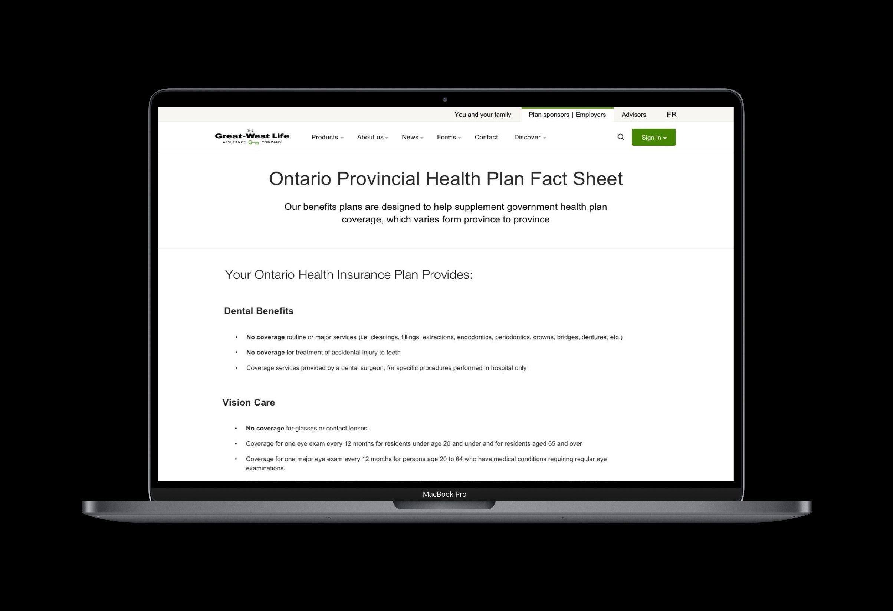
High fidelity prototype of Provincial Health Coverage Fact Sheet
Problem Definition
Currently plan sponsors who visit Great-West Life’s Provincial Government health plans look to see what is covered and what is not by their province in term of health benefits. Users are required to view provincial health information by viewing an in-browser PDF or download the PDF onto their computer. This method of viewing information is not compliant with the Accessibility for Ontario’s with Disabilities Act (AODA) and needs to be changed as part of a larger initiative for total accessibility across all Great-West Life Platforms.
Current User Flow
Before even starting to sketch out a redesigned solution, an evaluation of the current state is required to frame our design problem with the proper user requirements and project scope. First and foremost the current assumed user flow for users to reach the Provincial Health information page is buried quite deep within Great-West Life's Information Architecture.
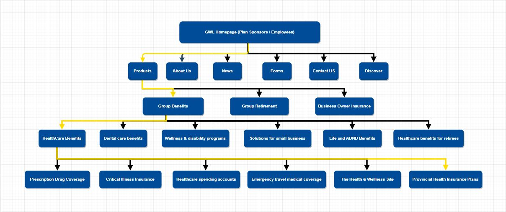
User Journey from Great-West Life Homepage to Provincial Health Information, outlined in yellow
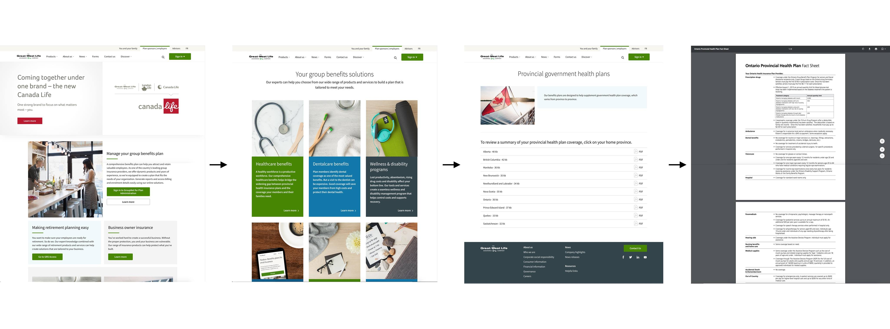
User Flow to reach current Provincial Health Coverage Information
Product Pain Points
- Organically arriving at the Provincial Health coverage page requires the user to go 4 levels deep to get the information they need
- Search results from Google return a low ranking and will not surface unless specific key words are typed
- Housing information within a PDF is difficult to find specific information and creates a barrier to view information
- Users require this information to help make informed decisions on group insurance at the beginning of their discovery phase, not near the end
Process
1. Competitive Analysis
A competitive analysis was done on some of Great-West Life's competitors such as Sunlife Financial, Manulife Financial and TD Insurance. Questions looking to be answered by the analysis include how do our competitors host government health information, if they do where in their website is it placed and the tone conveyed on the page. In summary, what I found was that:
- All three insurance firms didn’t host the health care information directly on their site and provided the respective links to either the official government of Canada healthcare coverage page or the province’s official health care coverage information page
- All type of information displayed were in plain text format with limit highlighting, bolding or complex interfaces
- Language portrayed on competitor website warned that customers should evaluate what is covered and what is covered by their province before making a purchasing decision
2. Product Analytics
One of the fantastic things about Great-West Life or large companies in general is a dedicated social media and marketing team. Although marketing strategies weren't going to help me, the analytics department was and had a lot of great user insight such as the next page users were clicking on, PDF downloads and unique visits to each page. Below are some of the key findings but in general I learned that:
- Provincial Health Insurance page has a relatively low view count compared to the over 5 million annual visits to the homepage
- Users hardly download the PDFs and spend approximately 1 - 5 minutes reading the material they need
- Most users that view the provincial health care information return to the product page to presumably look for the right product to purchase
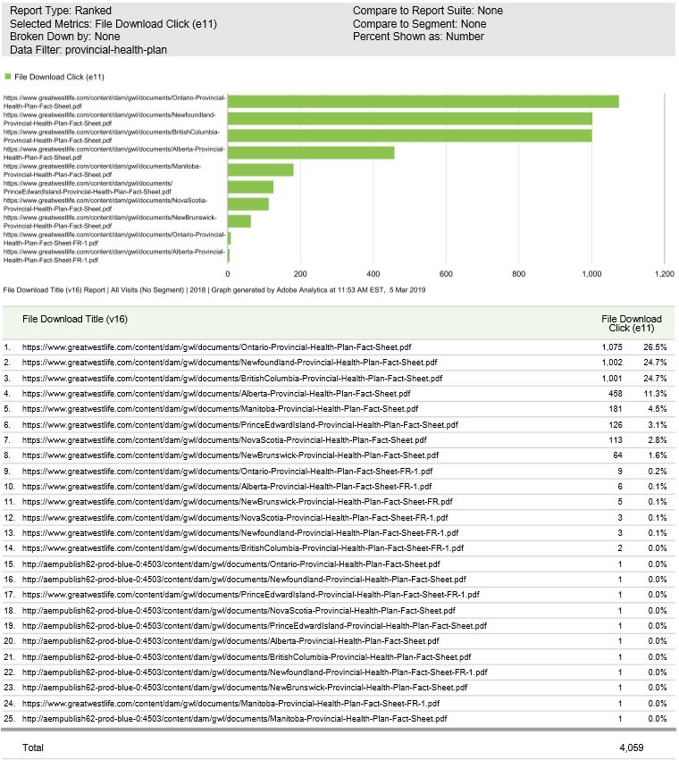
Unique Provincial File Download Count
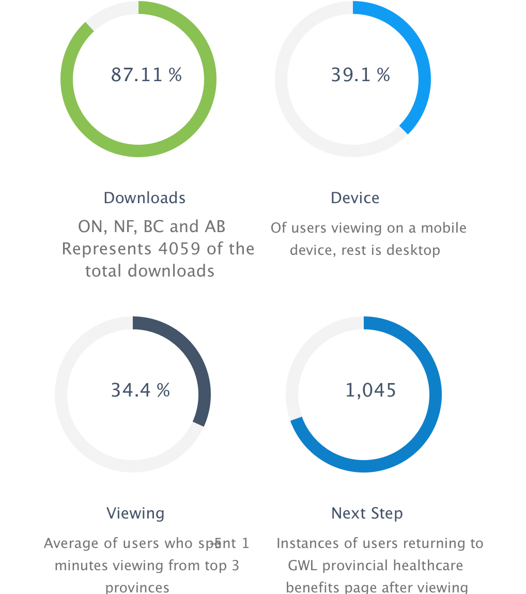
Key Findings of user behaviour
3. Synthesis of Product Data
After synthesizing the data, potential solutions were formulated to combat the current issues with the user experience.
First by addressing the issue that access to the health plan coverage page is only available on one spot within the entire website. users are using this page to find out what is covered and what isn’t covered by their provincial health care plans, why not surface this page sooner rather than only within one spot as a link? Sure it may be information that's not specifically about a product but can be a point of conversion, leading to products that help cover what a group sponsors doesn't cover.
Other competitors send the user elsewhere with external links instead of hosting the information on the site. Why not keep our users on our site where we can control the experience and keep users from straying away when visiting external links? Even if users are viewing the information for 1-5 minutes, they are still within Great-West Life's user experience domain.
Users visit back to products page under group benefits or exit the site with the information they need showing that users are taking this information into consideration when evaluating group coverage, why not make it easier for them on how they make their decisions?
4. Iterative Design
Compiling the research and data now makes it easier to sketch out what our research based design solutions might look like. A few wireframes were drafted extrapolating from the main ideas formulated to combat the key user experience issues.
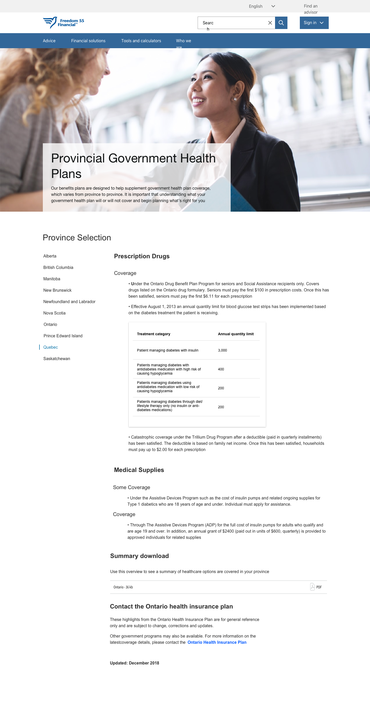
Wireframe 1: Side Navigation (dynamic content)
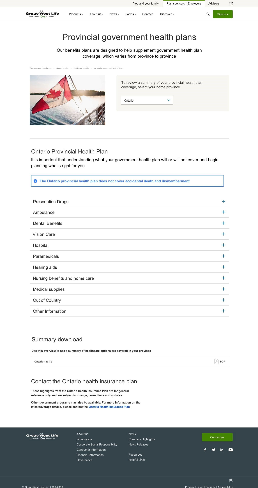
Wireframe 2: Drop-down Menu, Content hidden within drawers

Wireframe 3: Province tile selection, PDF content laid out in HTML format
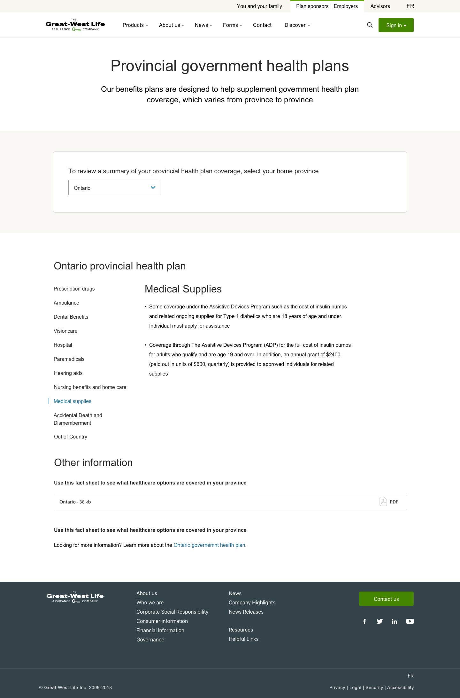
Wireframe 4: Drop-down menu + dynamically changing content with side navigation
5. Design Conflict
Ultimately wireframe 4 was chosen to be one of the ideal solutions due to the pre-made design system components and design rationale meant that changes to the existing webpage would move quicker due to the reduced development time.
From a user’s perspective the initial wireframe was more than enough and the business units were delighted to see the potential changes to enhance the user experience. But after further discussion, an area which I had yet to consider was SEO. My knowledge of SEO optimized design was limited and was not taken into consideration while building the initial wireframe. Issues with the proposed design include:
- Drawers - Content that is dynamic (and requires user interaction) is often not taken into consideration or seen by Google which affects the content’s ability to rank and be visible in search
- Drop-down Menus - Each section of the drop down contains links that dilute the authority being passed down to the linked pages storing the authority of the site's content and child-content pages
- Dynamically loaded content - Google has stated that content that is not visible to users right when they land on the page may be discounted and not considered to help benefit the ranking of the page. We can consider this content to be “invisible” and not searchable
6. Final Design
Final design iterations have taken into consideration everyone’s feedback as well as SEO best practices. This included the removal of dynamically changing content as well as the possibility of content hidden within drawers. Changes to the design also included links that lead to static webpages so that Google is able to crawl and improves the overall searchability.
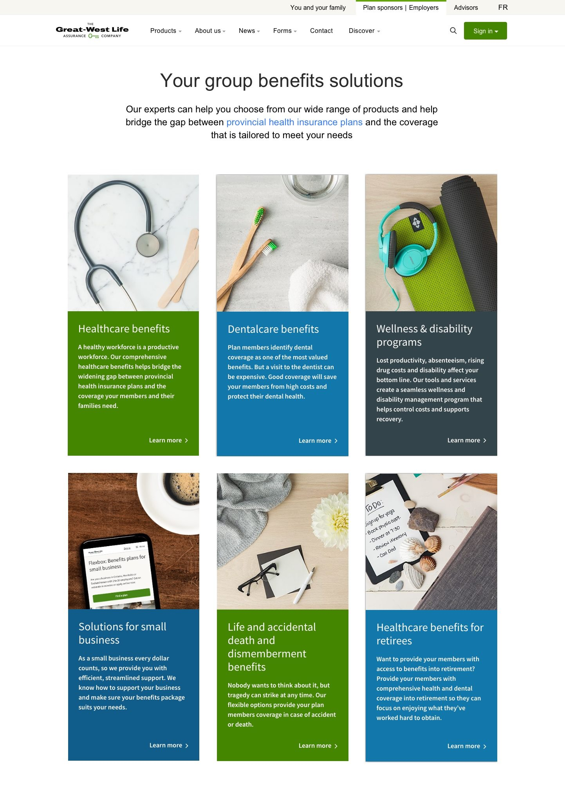
Final Wireframe 1: Users are linked to Provincial Healthcare Information before viewing available products
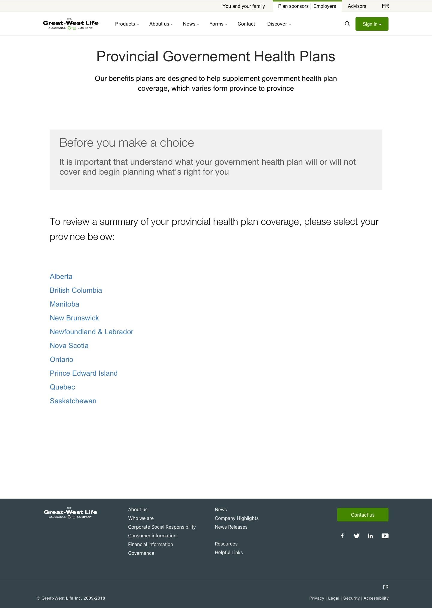
Final Wireframe 2: Removed dynamic content and content hidden within drawers. Province selection is easiest by links with disclaimer above
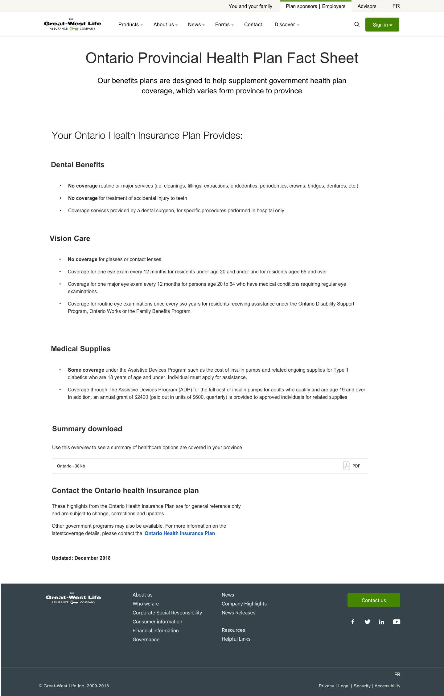
Final Wireframe 3: "No Coverage" is highlighted and PDF content is laid out in a digestible
Conclusion
Seemingly a simple conversion from PDF to straight HTML page text displaying provincial health information turned out to be a fun and great learning opportunity. I'm glad I failed and improved on my design to satisfy an important voice in the company to create an effective user experience. Some key points to remember for next time are:
- Consider each page a system and its potential interactions, not just the user but other domains
- The first iteration in a design is not always the best one, it’s okay to have multiple iterations, that’s part of the design process
- Sometimes keeping things simple is the best, when you try to over complicate what seems to be a simple task, it can lead to a lot unnecessary work done